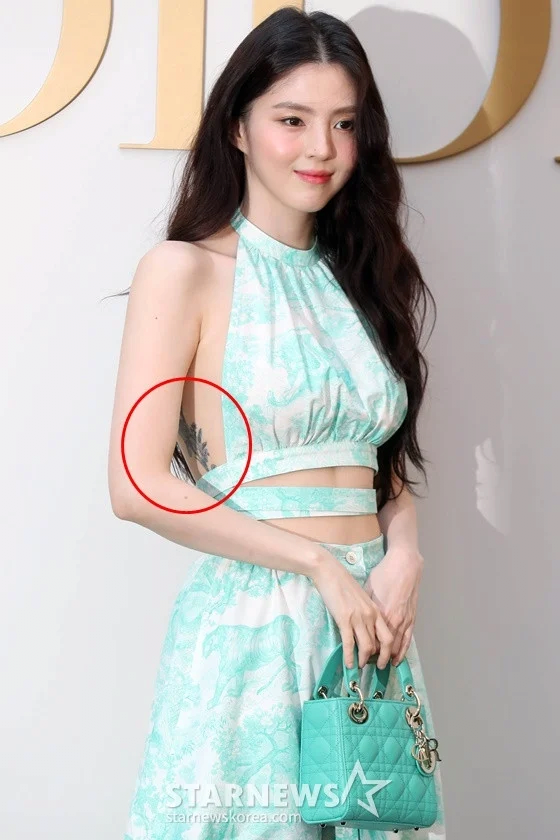
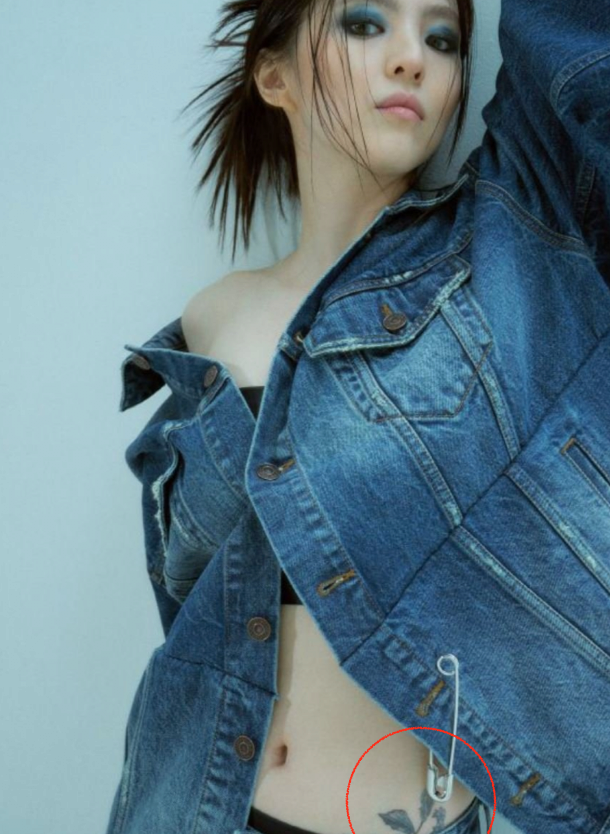

등이랑 골반 문신


등이랑 골반 문신
근데 이건 무슨 말투냐
류준열…네 이노옴!
못봤을리가 있나 걍 안지우고 싶었나보지
등쪽은 지울때 겁나 아플거같다..
멘헤라 기질 쎄게 있는 배우라 이질감 없긴하네 ㅋㅋ
팔뚝은 활동하다보면 깔일 많으니깐 억지로 지운 느낌
저정도면 뭐 칠하던가 cg처리하던가 대역쓰던가 견적섰겠지 뭐
안지운거지
못지운?? 안지운
저걸 못 지웠다고 하는 거구나
개 아파서 못지웠다에 한표. 보통 지방이없는부분이 미친듯이 아프다고 하긴 하드라
미처 못지운 건 뭐람
안이겠지
창 잘쓸 듯

호불호 갈리지만 개인적으로 문신 너무 좋음
...? 그럼 어딜 지운건데 내가 생각하는
팔이나 이런데 문신이많았음
본인도 모르고 의사도 몰랐나
내가 이해한 뜻이 술먹고 실수로 섹스했다는 뜻이랑 같은거지?
저쪽이면 수면마취하고 지워야하나
애도 가만 보면 멘탈 준내약한듯
저것도 자기학대의 일종이라 멘탈 약한게 맞는 것 같음
가정사 들어보면 진짜 정상적인 가족형태에서 사랑 많이 받고 자라는게 ㄹㅇ 존~~~~~~~나 중요한거 같음 내주변에도 문신 아기자기하게 한두개 말고 여러개 있는 여사친이나 지인 보면 술먹고 가정사 한탄함
근데 존나아플듯 ㄹㅇ
지우는게 더 아픈데 저기는 더 민감해서 걍 지옥일거같은데
문신이 잘 어울리는 성격 ㅋㅋㅋ
미처 못 지운게 맞노?